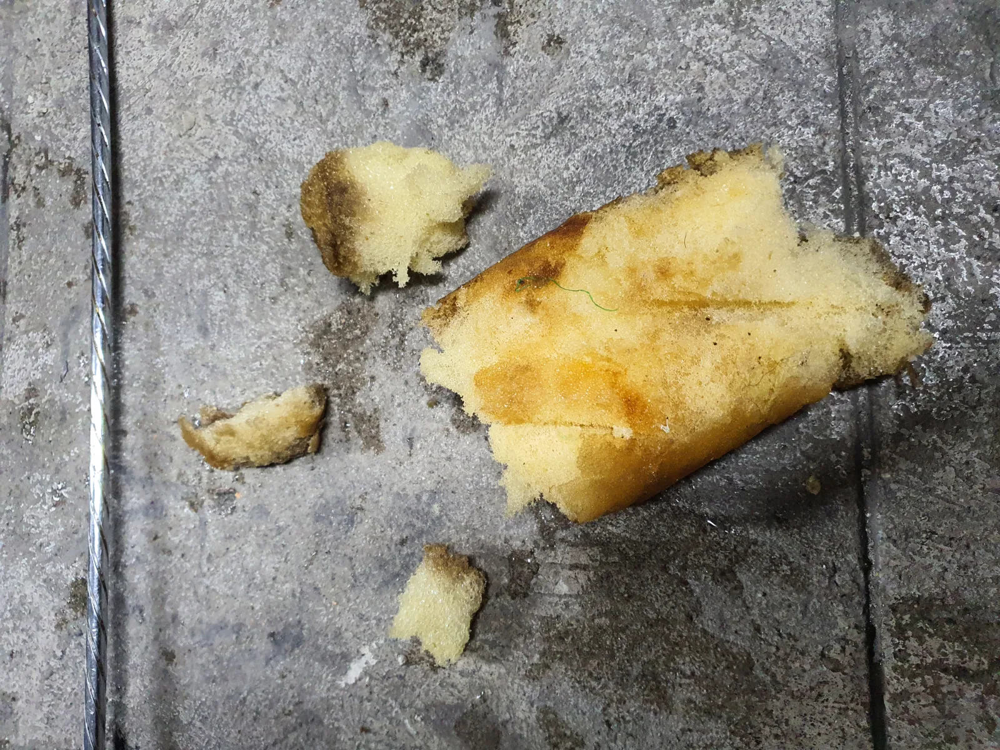

중구 · 순화동 · 싱크대막힘중구 순화동 싱크대막힘 | 서울 중구 순화동 아파트 싱크대막힘 물길을 차지한 이물질중구 순화동 싱크대막힘 아파트 싱크대 배관 안에 이물질이 두껍게 쌓여 물길이 좁아진 현장입니다 내시경으로 상태를 확인하고 샤프트로 배관스케일링을2026.09.27
중구 · 필동 · 하수구막힘중구 필동 하수구막힘 | 대형 스펀지 8시간 작업중구 필동 하수구막힘 내시경으로 위치를 확인하며 관통기와 샤프트로 대형 스펀지를 회수하고 고압세척으로 잔여물 정리2026.09.05